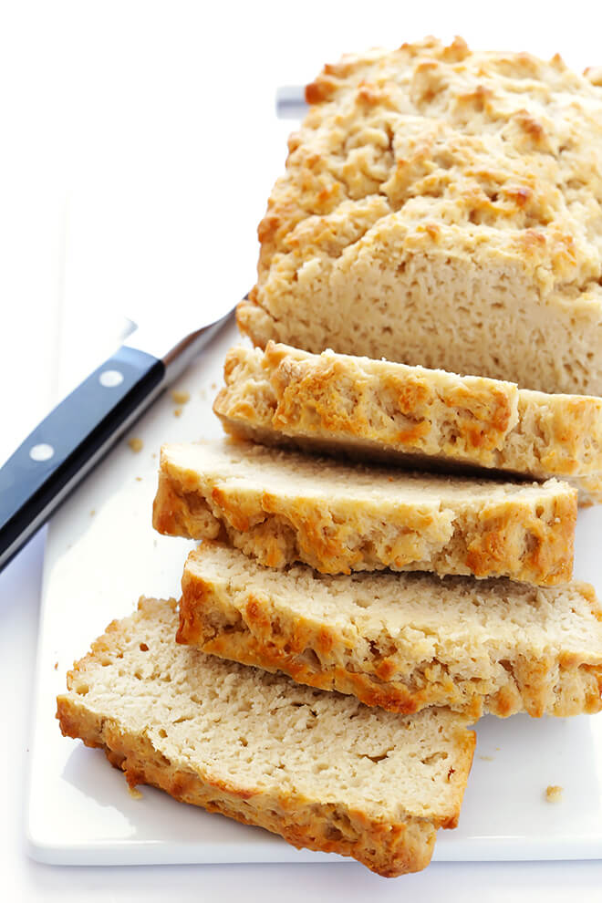

Buttery Honey Beer Bread

Description
I got this recipe from my dear, departed mother-in-law. She was at our house one time, and pulled out the recipe, neatly hand-written on a piece of flowery stationary. She taped it to one of our top kitchen cabinets. That was over 7 years ago, and it's still there. I can't bring myself to take it down, now that she's gone.
Ingredients
- 3 cups (375g) all-purpose flour
- 1 tbsp (12g) granulated sugar
- 1 tbsp baking powder
- 1 tsp (6g) salt
- 3 tbsp (64g) honey
- 1 bottle (12 oz) beer
- 4 tbsp melted butter
Steps
- Preheat oven to 350℉.
- Grease a 9x5-inch loaf pan.
- In a large bowl, whisk together flour, sugar, baking powder and salt. Add the honey and beer. Mix until just combined.
- Spread batter evenly in prepared pan. Pour the melted butter over the top of the batter.
- Bake for 50-60 minutes, or until a toothpick comes out clean and the top is golden brown.
- Turn the loaf out onto a wire rack for cooling.